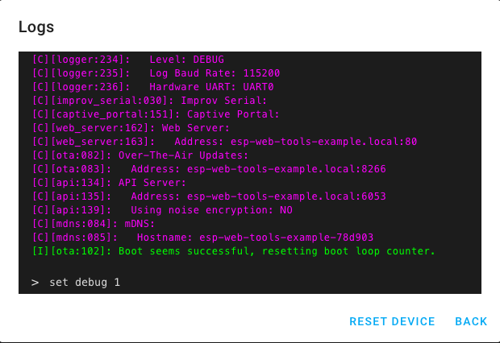

OpenUC2
OpenUC2
Matchboxscope/Anglerfish (ESP32) Flashing Tool
User-friendly tool to flash/upload the firmware for the Matchboxscope/Anglerfish device in the browser:
- Install & update firmware
- Connect device to the WEB-USB Serial interface (work in progress)
- Visit the device's hosted web interface (work in progress)
- Access logs and send terminal commands (work in progress)
Pick your ESP32 PCB and flash the software using the browser! No programming or other software required.
Note: Ensure you have installed the CH340 driver and set the board into boot mode (press first reset => hold it and then reset at the same time).
ESP32 Camera board for ther matchboxscope
This is a ESP32 based board for the matchboxscope. More information can be found here.
Pin Layout
// ESP32-Camera
const int PIN_DEF_LENS = 16;
const int PIN_DEF_LED = 04;
Viewing logs & sending commands
ESP Web Tools allows users to open a serial console to see the logs and send commands.

Screenshot showing the ESP Web Tools logs & console Based on the ESPHome Web-Tool.